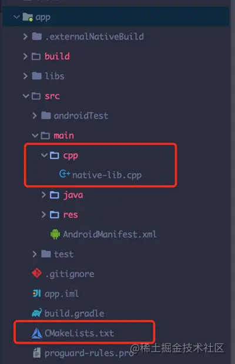
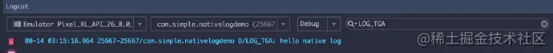

JNI输出原生LOG
我们可以在c/cpp代码中用print函数输出log信息，但是这样在logcat并不会显示，好在Android已经给我提供了相应的方法解决这个问题：使用log.h头文件
开始
- 创建一个新的Android Studio的工程项目
- 勾选Include C++ support选项
- 然后就是一路next直到创建项目成功
项目结构
生成好的项目会在main目录下创建好cpp目录和相应的cpp文件，以及CmakeLists文件

CmakeLists
# For more information about using CMake with Android Studio, read the
# documentation: https://d.android.com/studio/projects/add-native-code.html
# 限定cmake支持最低版本
cmake_minimum_required(VERSION 3.4.1)
# 指定so生成到libs目录
set(CMAKE_LIBRARY_OUTPUT_DIRECTORY ${PROJECT_SOURCE_DIR}/libs/${ANDROID_ABI})
# 配置so库的信息
add_library( # Sets the name of the library.
# 生成的so库名称,并不需要和c/cpp文件名相同
# 这里生产的so库名称将为libnative-lib.so
native-lib
# Sets the library as a shared library.
# STATIC：静态库，是目标文件的归档文件，在链接其它目标的时候使用
# SHARED：动态库，会被动态链接，在运行时被加载
# MODULE：模块库，是不会被链接到其它目标中的插件，但是可能会在运行时使用dlopen-系列的函数动态链接
SHARED
# Provides a relative path to your source file(s).
# 资源文件的路径，可以是多个资源文件
src/main/cpp/native-lib.cpp )
# 从系统库中查找依赖库
find_library( # Sets the name of the path variable.
# 设置依赖库的名字，下面链接库的时候会用到
log-lib
# Specifies the name of the NDK library that
# you want CMake to locate.
# 查找log依赖库
# {sdk-path}/ndk-bundle/sysroot/usr/include/android/log.h
log )
# 配置库的依赖关系(链接关系)
target_link_libraries( # Specifies the target library.
# 目标库
native-lib
# Links the target library to the log library
# included in the NDK.
# 依赖库，可以是多个
${log-lib} )
native-lib.cpp
#include <jni.h>
#include <string>
extern "C" JNIEXPORT jstring
JNICALL
Java_com_simple_nativelogdemo_MainActivity_stringFromJNI(
JNIEnv *env,
jobject /* this */) {
std::string hello = "Hello from C++ hhahah";
return env->NewStringUTF(hello.c_str());
}
app/build.gradle下的android节点块
android {
compileSdkVersion 27
defaultConfig {
applicationId "com.simple.nativelogdemo"
minSdkVersion 16
targetSdkVersion 27
versionCode 1
versionName "1.0"
testInstrumentationRunner "android.support.test.runner.AndroidJUnitRunner"
externalNativeBuild {
cmake {
cppFlags ""
}
}
}
buildTypes {
release {
minifyEnabled false
proguardFiles getDefaultProguardFile('proguard-android.txt'), 'proguard-rules.pro'
}
}
externalNativeBuild {
cmake {
path "CMakeLists.txt"
}
}
}
完善代码
很简单，只需要在cpp文件中引入log.h头文件并调用相关方法即可
#include <jni.h>
#include <string>
//{sdk-path}/ndk-bundle/sysroot/usr/include/android
#include <android/log.h>
//定义输出的TAG
const char * LOG_TGA = "LOG_TGA";
extern "C" JNIEXPORT jstring
JNICALL
Java_com_simple_nativelogdemo_MainActivity_stringFromJNI(
JNIEnv *env,
jobject /* this */) {
std::string hello = "Hello from C++ hhahah";
//输出debug级别的日志信息
__android_log_print(ANDROID_LOG_DEBUG, LOG_TGA, "hello native log");
return env->NewStringUTF(hello.c_str());
}
输出

log.h头文件分析
常用输出函数
/**
* 输出一个简单的字符串作为log信息
*/
int __android_log_write(int prio, const char* tag, const char* text);
/**
* 输出一个格式化的字符串作为log信息
*/
int __android_log_print(int prio, const char* tag, const char* fmt, ...)
/**
* 与`__android_log_print`方式相同，区别只是传递参数不同
*/
int __android_log_vprint(int prio, const char* tag, const char* fmt, va_list ap)
/**
* 用于记录断点失败，类型为`ANDROID_LOG_FATAL`
*/
void __android_log_assert(const char* cond, const char* tag, const char* fmt,
...)
参数prio代表日志级别
日志级别类型
typedef enum android_LogPriority {
/** For internal use only. */
ANDROID_LOG_UNKNOWN = 0,
/** The default priority, for internal use only. */
ANDROID_LOG_DEFAULT, /* only for SetMinPriority() */
/** Verbose logging. Should typically be disabled for a release apk. */
ANDROID_LOG_VERBOSE,
/** Debug logging. Should typically be disabled for a release apk. */
ANDROID_LOG_DEBUG,
/** Informational logging. Should typically be disabled for a release apk. */
ANDROID_LOG_INFO,
/** Warning logging. For use with recoverable failures. */
ANDROID_LOG_WARN,
/** Error logging. For use with unrecoverable failures. */
ANDROID_LOG_ERROR,
/** Fatal logging. For use when aborting. */
ANDROID_LOG_FATAL,
/** For internal use only. */
ANDROID_LOG_SILENT, /* only for SetMinPriority(); must be last */
} android_LogPriority;
我们只需要关注其中的
- ANDROID_LOG_VERBOSE
- ANDROID_LOG_DEBUG
- ANDROID_LOG_INFO
- ANDROID_LOG_WARN
- ANDROID_LOG_ERROR
这5个就好了，因为这是我们常用的。